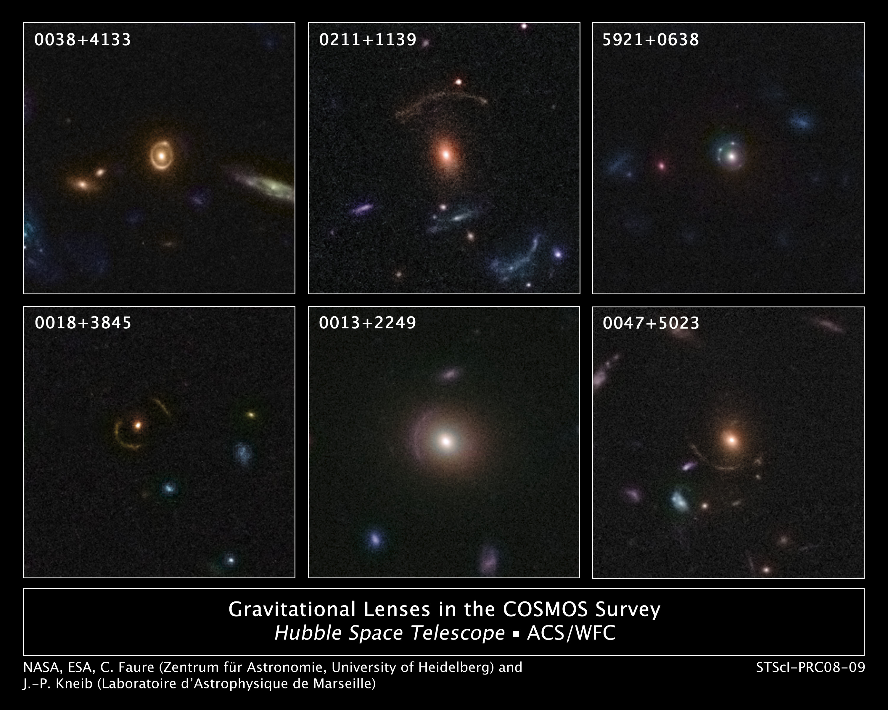
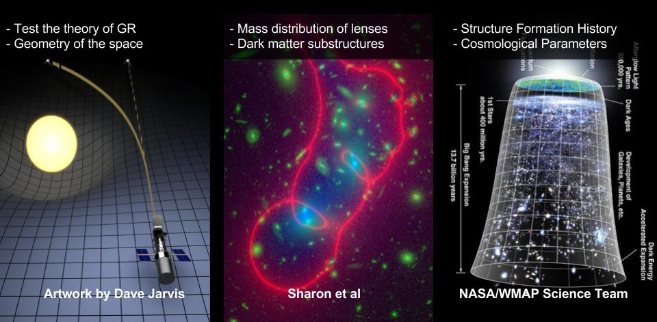
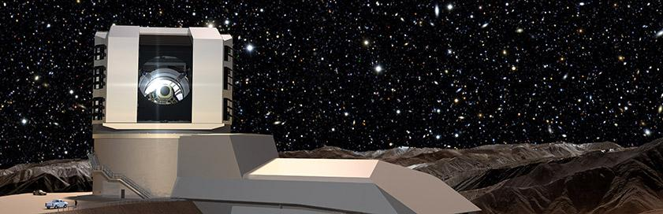

What is Gravitational Lensing?

When we think of lenses, we often think of telescopes, magnifying glasses or binoculars. In all these devices, light enters one end of the device, gets warped and manipulated, then enters your eyes at the other. Gravitational lensing works under a similar principle. Light is emitted from distant objects, gets bent by the gravity of massive objects like stars and galaxies, and is observed by our telescopes and satellites. Simply, Gravitational lensing is when light curves around the gravity created by a large mass of galaxies. This typically results in seeing multiples of the same image of light, or highly distorted arclets images (perfectly, there will be an Einstein ring).

This figure shows some confirmed images of gravitational lensing systems. The lenses come from a recently completed, large set of observations as part of a huge project to survey a single 1.6-square-degree field of sky (nine times the area of the full Moon) with several space-based and Earth-based observatories. The COSMOS project, led by Nick Scoville at the California Institute of Technology, used observations from several observatories including the Hubble Space Telescope, the Spitzer Space Telescope, the XMM-Newton spacecraft, the Chandra X-ray Observatory, the Very Large Telescope (VLT), the Subaru Telescope, and the Canada-France-Hawaii Telescope. (From NASA)
Why is Gravitational Lensing Interesting?

In the Universe, the occurrence and morphology of lensed images reflect the properties of gravitational potential of the lens. It has become one of the most promising tools to study the mass distribution of the lenses and the geometry of the Universe. Lensing effects can be observed on all scales: weak lensing on the scale of Mpc, strong lensing on the scale of kpc, and micro lensing on the scale of pc. It is applied in astrophysics and cosmology to study a wide range of problems, e.g., reconstructing mass distribution of lens, identifying faint or dark substructures, detecting galaxies at high redshift, measuring the Hubble constant, amongst other applications. Thus, gravitational lensing is a universal tool, it extremely useful for understanding the Universe both on large and small scales.
Gravitational Lensing in the Future

In 2023 the Large Synoptic Survey Telescope will go online and start a 10 year survey of the sky. More examples of gravitational lensing will be found and huge amounts of data will be produced. It will be up to people outside the scientific community to help process through this data. At this point where there are few images of gravitational lensing, this help is relatively unnecessary. In the future however, it is an efficient way scientists will be able to collect meaningful data is through the diligent help of Citizen Scientists like you (there would be an alnative way which is utilizing machine learning). This task can be pawned off to a computer but (so far) humans have the best ability to recognize the complex and unique structures of a lensed object. Based on the idea above, we build up this Citizen Science project for the highly efficient analysis of a large set of gravitational lensing systems.